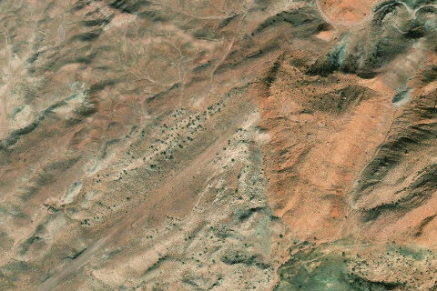

Wee Hope Mine / Radium King
WEEHOPEMINE · UT

Aerial imagery source: Esri, Vantor, Earthstar Geographics, and the GIS User Community
| Identifier | WEEHOPEMINE |
|---|---|
| State | UT |
| Runway length | 1,908 ft |
| Runway width | 40 ft |
| Surface | Dirt |
| Runway | 4/22 |
| Elevation | 5,476 ft |
| Ownership | blm |
| CTAF | 122.9 |
| Coordinates | 37.5715, -110.224 |
Notes
[ubcp] Description : Visit a time capsule when you fly into Wee Hope Mine. The desert has preserved this forgotten mine for us to explore today. It is not hard to imagine the day it closed and the ensuing shenanigans that must have included launching a now collectable sedan off a cliff. Still standing are a bunk house, kitchen, outhouse, animal corral, mining shack, and other scattered antiquities. This airstrip is at the bottom of Red Canyon, a very large bowl with an opening to the south. This can cause significant wind variations. Descending below the canyon rim, the swirling winds and turbulence may force a discontinued approach. Crosswinds are very common here and may have negative consequences due to steep drop-offs on either side of the runway. The best chance of a successful approach and landing likely would be accomplished in the early morning. The mine is located south of the airstrip, about a five-minute walk. The kitchen is visible from the runway with most of the other structures hidden below the hill. As you explore, keep this place an enjoyable museum for everyone and do not to disturb or remove any of the treasures. Runway : This airstrip is open to most aircraft types given favorable density altitude and weight. It is long and smooth by backcountry standards with most of the runway covered in pea size gravel. The east end is more of a dirt/grass mix. Use caution for sharp drop offs on all sides of the runway especially towards the west end. Use caution as the airstrip is accessible by road and on occasion cars, UTVs, or campers may be parked on the runway. Approach considerations : Landing west requires a dogleg to clear an overburden hill left from mining. Landing east is clear with a sharp drop off at the threshold. Takeoff and landing can be accomplished in either direction. Parking : Not adequate room for parking multiple aircraft unless at the east end of the airstrip. Plenty of flat ground for camping. Cell Phone Coverage : For the most part there isn't any coverage. However, if you walk a hundred yards or so east off the end of the airstrip, just to the left of the ridge (not in top of the ridge and not in the bottom of the wash), you'll find me bar with Verizon that is enough to get/send text messages and make a phone call. Camping : On the east end there is enough room to pull planes mostly off the strip and throw a tent next to your plane. There is a fire ring next to some flat rocks that make for an awesome place to sit and have dinner overlooking stunning vistas.